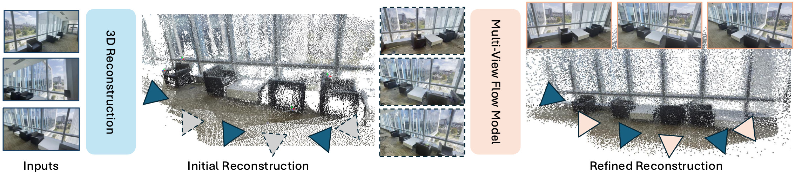
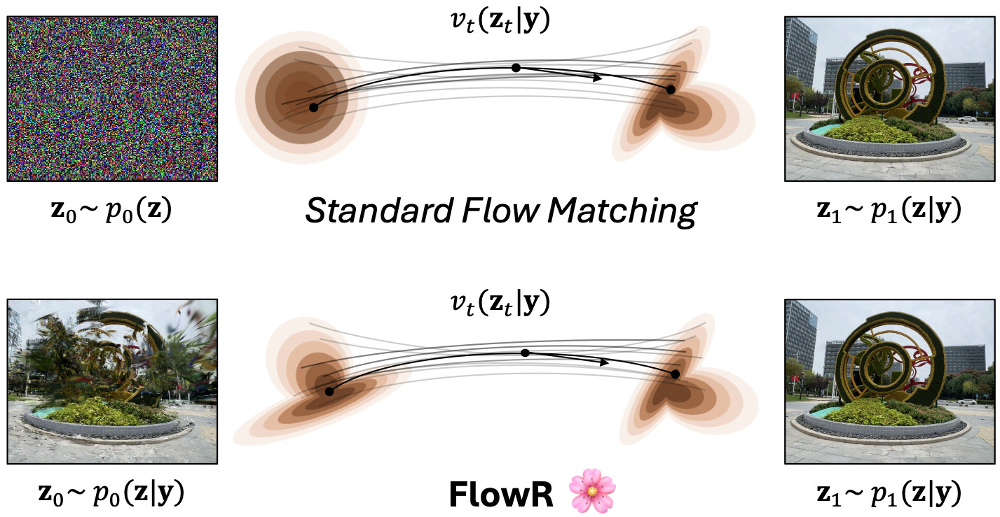
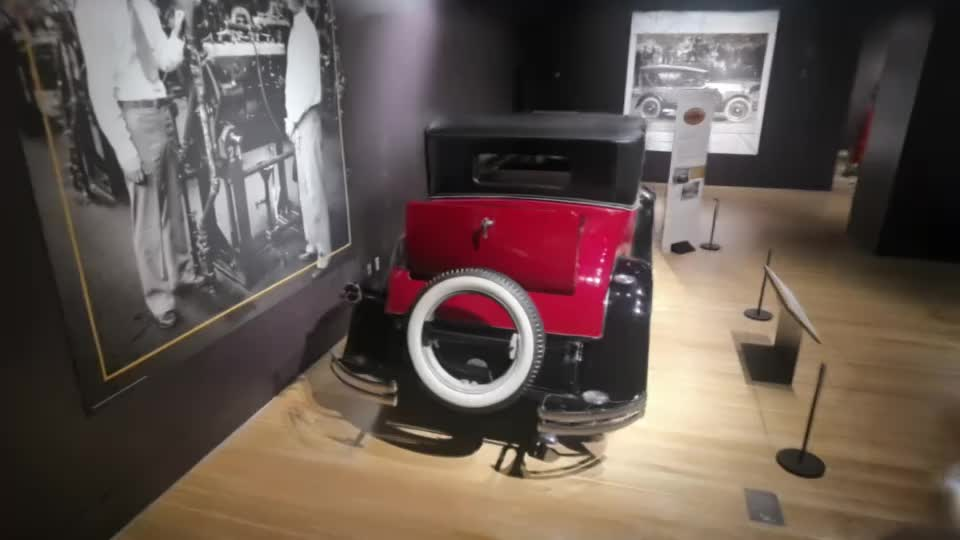
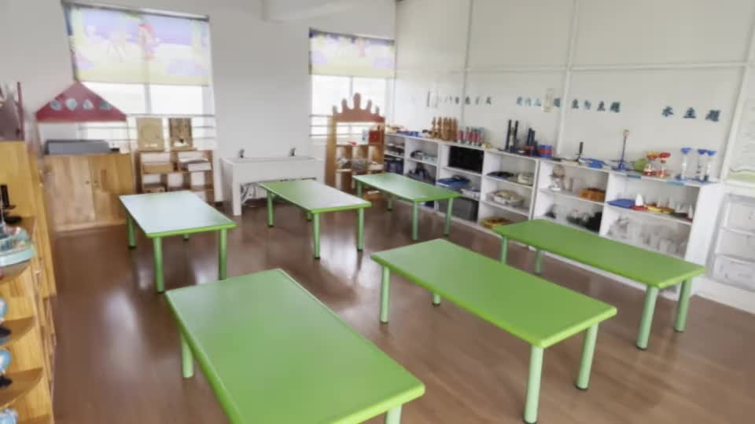

TL;DR
Abstract
3D Gaussian splatting enables high-quality novel view synthesis (NVS) at real-time frame rates. However, its quality drops sharply as we depart from the training views. Thus, dense captures are needed to match the high-quality expectations of applications like Virtual Reality (VR). However, such dense captures are very laborious and expensive to obtain. Existing works have explored using 2D generative models to alleviate this requirement by distillation or generating additional training views. These models typically rely on a noise-to-data generative process conditioned only on a handful of reference input views, leading to hallucinations, inconsistent generation results, and subsequent reconstruction artifacts. Instead, we propose a multi-view, flow matching model that learns a flow to directly connect novel view renderings from possibly sparse reconstructions to renderings that we expect from dense reconstructions. This enables augmenting scene captures with consistent, generated views to improve reconstruction quality. Our model is trained on a novel dataset of 3.6M image pairs and can process up to 45 views at 540x960 resolution (91K tokens) on one H100 GPU in a single forward pass. Our pipeline consistently improves NVS in sparse- and dense-view scenarios, leading to higher-quality reconstructions than prior works across multiple, widely-used NVS benchmarks.
Method
FlowR consists of two parts:
- A robust initial reconstruction pipeline based on 3DGS but designed for both sparse- and dense-view settings.
- A data densification procedure, which uses flow matching to generate high-quality extra views which can be used to improve reconstruction.

Initial reconstruction
We use MASt3R on a sparse co-visibility graph to estimate tracked correspondences which are then used to triangulate an initial point cloud from which we fit an initial 3DGS representation. We use this to create a dataset of 10.3k reconstructed scenes covering 3.6M pairs of novel view reconstructions with their corresponding ground truth images, on which we train our flow matching model.
Data densification via flow matching
Flow matching is a paradigm for generative modeling where the model learns a velocity field that can be used to map samples from a noise distribution to samples from the data distribution. However, in this work, instead of modeling the velocity field between noise and data, we model the velocity field between the incorrect novel view renderings and the respective real images of that viewpoint:

Instead of mapping a standard multivariate Gaussian distribution $p_0(\mathbf{z})$ to a (conditional) target distribution $p_1(\mathbf{z}|\mathbf{y})$, we consider source distributions of the form $p_0(\mathbf{z}|\mathbf{y})$. We use novel view renderings of sparse reconstructions as source distribution samples, which we map to the target distribution $p_1(\mathbf{z}|\mathbf{y})$ that represents reconstructions obtained under optimal, dense conditions (i.e. ground truth).
In this way, if we already have enough dense input images that our initial reconstruction is good enough for a particular view, the flow matching model can simply learn not to change the input. This formulation ensures that the generative model does not generate unnecessary new details that are inconsistent and conflict with existing scene content, and thus results in sharp scene details, avoiding blurred-out averages of inconsistent generations.
Qualitative comparison
We compare FlowR to several baselines on sparse-view 3D reconstructions from DL3DV140. First, we compare to a naive Splatfacto baseline.


Second, we compare FlowR to ViewCrafter, another generative model for view-set augmentation. In constrast to FlowR, ViewCrafter introduces floaters to the reconstruction due to inconsistent (yet visually plausible) view generation.





Third, we compare FlowR’s final results after data densification to its initial 3D reconstructions ‘FlowR (Initial)’.


FlowR removes a substantial amount of reconstruction artifacts.
BibTeX
@InProceedings{fischer2025flowr,
author = {Tobias Fischer and Samuel Rota Bul{\`o} and Yung-Hsu Yang and Nikhil Keetha and Lorenzo Porzi and Norman M\"uller and Katja Schwarz and Jonathon Luiten and Marc Pollefeys and Peter Kontschieder},
title = {{FlowR}: Flowing from Sparse to Dense 3D Reconstructions},
booktitle = {Proceedings of the IEEE/CVF International Conference on Computer Vision (ICCV)},
year = {2025}
}Tobias Fischer
Dr. Tobias Fischer is a Researcher at Apple.